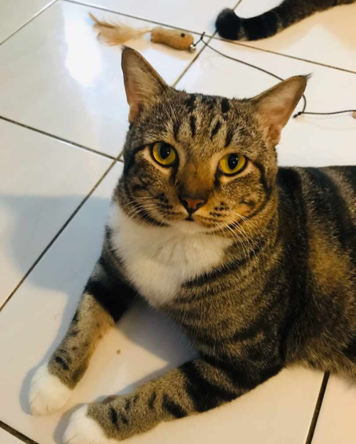

About Me

Hi, let me introduce myself first. My name is Aina Munirah Binti Fauzi. You can call me Aina.
I’m turning 20 years old. I was born on 14th April 2000 and I was born at Hosptal Kajang. I
live at Taman Desa Sentosa, Teras Jernang, Bandar Baru Bangi with my family. I'm a student and
currently I studied at UiTM Kedah in majors Library Management.

My hobby? Well, I really enjoy listening to music. I can listen to any song whether Malay song,
English song and I listen to Kpop Song as well. Here I include my favourite playlists:
Maroon 5
Maroon 5 - MemoriesTones And I
Tones And I - Dance MonkeyAva Max
Ava Max - So Am IUsop
Usop - SelamanyaInsomniacs
Insomniacs - PulangBig Bang
Big Bang - If YouBig Bang
Big Bang - Let's not fall in loveWhen I'm bored, I love to watch cooking video from Khairul Aming (@khairulaming)
at Instagram. His video is quite interesting, easy and funny at the same time.
So, this is one of my favourite video from him because in this video has Faizal
Tahir as a sound background. I hope you will enjoy watching this too.

Besides, I am a pet lover. I really love to watch a video about animals through Instagram.
or Twitter. But I love cat the most because they are so cute and very clingy.
So, this is my beloved cat. His name is Mok. Yeah obviously because he is very fat.